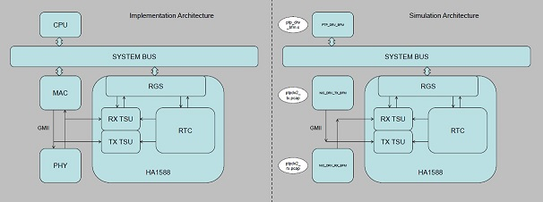
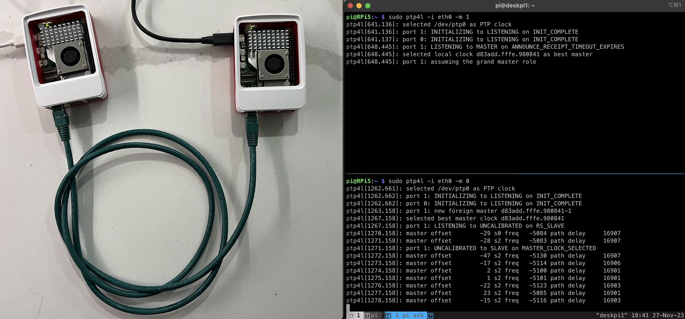

2025-05
World/Task/Communication Model for Language Generation
We need to Jump above the gradient descent contour.
How to jump is key for meta learning.
And we need each others for bigger Task.
2025-05-28
Through Hole Communicator
Through Hole Communicator Paper
Pi4 Cameras + OBS Studio
Pi4 Cameras + OBS Studio Paper
lwIP - A Lightweight TCP/IP stack
lwIP - A Lightweight TCP/IP stack
STM32H7 FreeRTOS LWIP Examples
Open Source Lab Tools
open-neuroscience.com
Arduino Control in Neuroscience
2025-05-27
STM32 PTPd on Github
cocotb for ethenet
RT-Thread PTP use DP83640
STM32H7 PTPd
How to Implement IEEE 1588 Time Stamping in an Ethernet Transceiver
How to Implement IEEE 1588 Time Stamping in an Ethernet Transceiver
PTP use Rust on STM32
Google HLS
egos-2000 little OS on RISC-V (fpga)
This little book contains a series of course projects based on egos-2000. The goal is to help students gain experience and confidence in creating their own operating systems or similar computer systems in their future careers.
2025-05-26
PTP1588 Hardware Assisit use SCala (Chisel)
IEEE1588 Verilog

2025-05-23
Teensy 4.1 PTP
FPGA and High Frequency Trade (PTP TSN)
2025-05-22
CologneChip FPGA from Germany Gatemate
gatemate-fpga video and partial reconfig
cocotb and litex
2025-05-21
USB3 Camera + Pi for Sync
2025-05-20
closed-loop-neuroengineering
closed-loop-neuroengineering github
Chip Support PTP
DP83640/83630
LAN9250
ESP32-P4
More PTP
2025-05-19
syntalos
Calibrate RTC
calibrating-an-mcus-rtc-using-gps
2025-05-16
Whitequart (Amaranth author) Lab Blog 2024-2014
ICEBreak Examples
2025-05-15
An NVIDIA Jetson Nano/NX alternative powered by SpacemiT K1 octa-core RISC-V SoC
SpacemiT K1 octa-core RISC-V SoC
2025-05-14
Pi 5 PTP

2025-05-13
Cocotb
ADC/DAC and Digital IO

PI5 PTP PPS
Raspberry Pi 5 Ethernet PTP Timestamping - How should it work?
Pi5 TimerServer use GPS Github

2025-05-12
OE Breakout board LVDS 8b10b

Harp Timing

Cool FPGA Github for USB,HDMI,JPEG
PhD graduated from USTC // FPGA // Verilog // Data Compression // LLM newbie // Hope to bring better open source projects
2025-05-09
Micropython Harp
HDMI TMDS


FPGA Evaluation
1.Size Speed
2.IP
3.Tool
4.P&R Performance
5.TCL Support ?
6.Evalutation Board
7.efuse Support ?
2025-05-08
TMDS
onechipbook-12-a-fpga-development-platform
onechipbook-12-a-fpga-development-platform
2025-05-07
PyXL is a custom chip that runs Python directly in hardware
PyXL is a custom chip that runs Python directly in hardware. no VM, no JIT, no C. Just fast, native Python execution.
2025-05-06
使用 uv 管理 Python 環境
ATtiny Configurable Custom Logic
Getting Started With ATtiny Configurable Custom Logic
FPGA Game Bub
2025-05-05
Serdes Encoder/Decode Basic
MLVDS
DPLL 74LS297
2025-05-02
DPLL Github
https://github.com/jsloan256/dpll
https://github.com/KayChou/DPLL